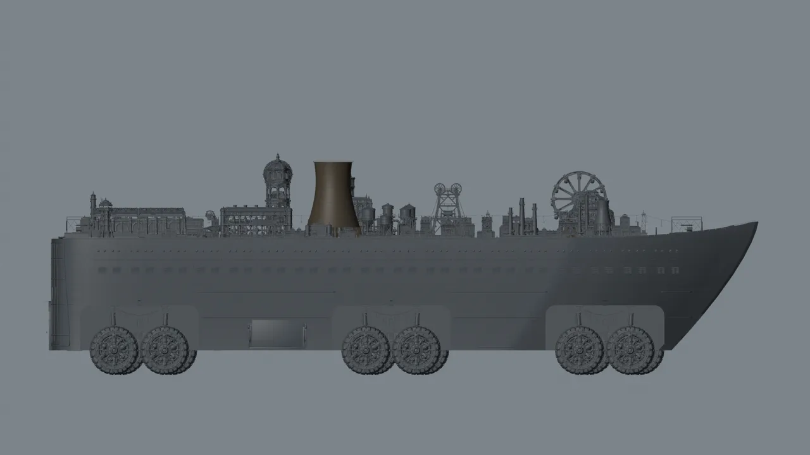
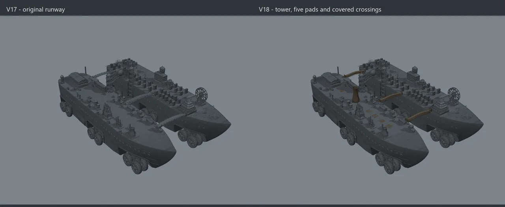
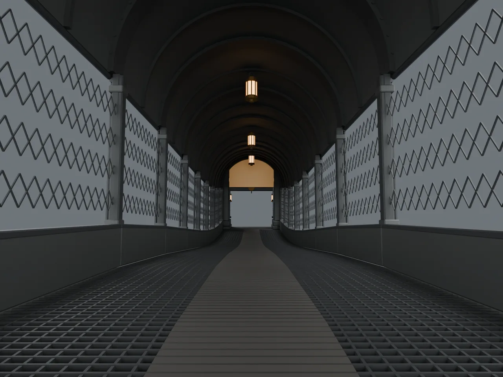
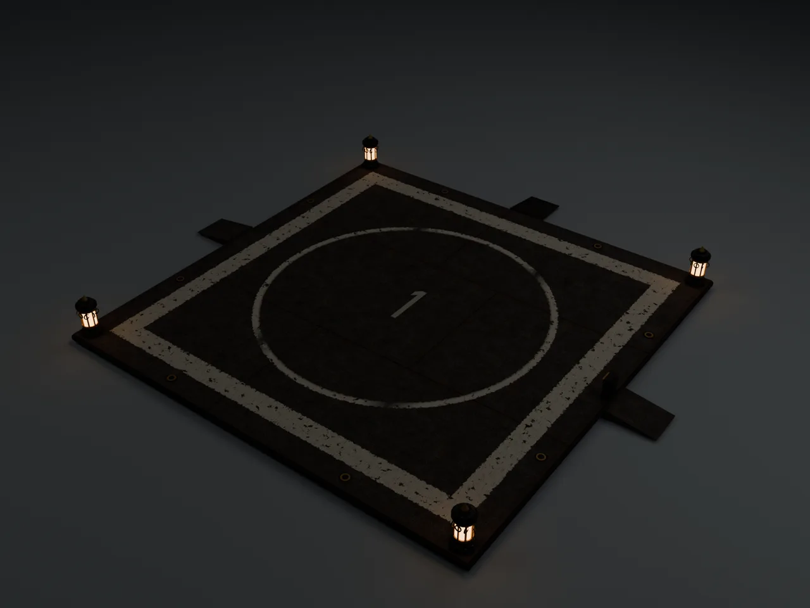
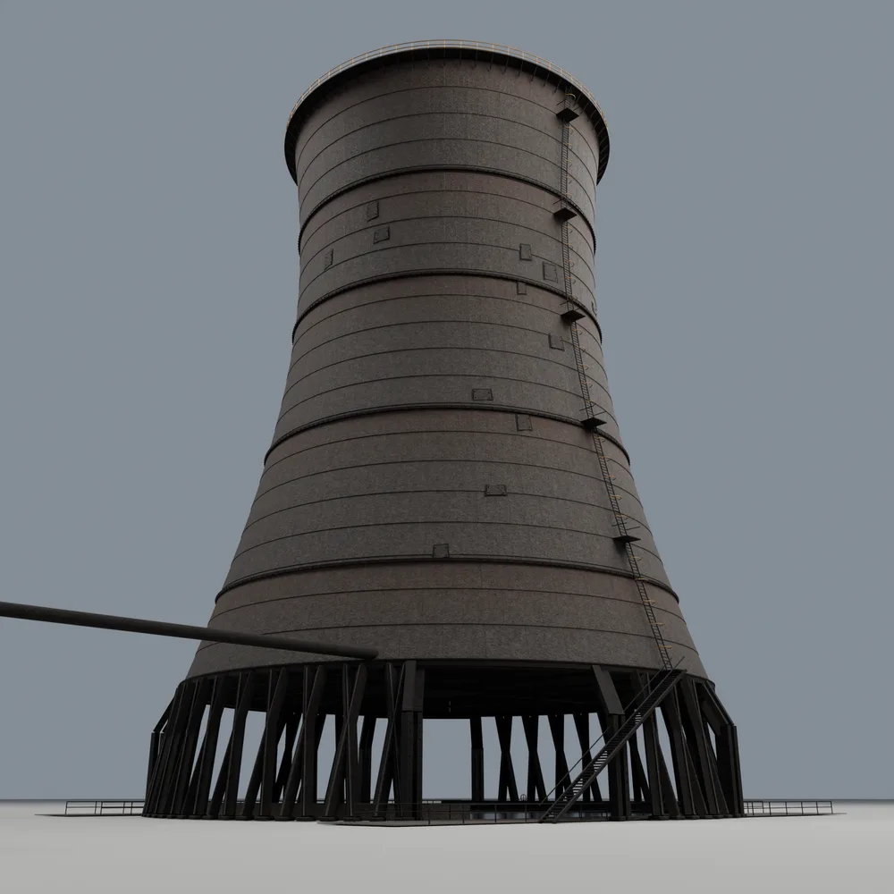
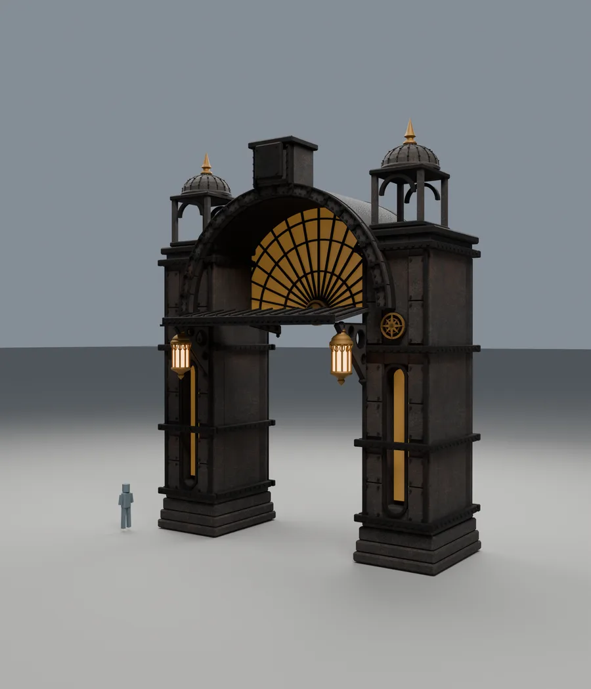

Devlog · Cogworks & Art
Three weeks ago we showed the kit. Since then the Grindwalker went through ten versions, lost its hulls, followed real ground in Unreal for the first time, and traded its runway for landing pads, a cooling tower and covered bridges.
When we walked through the Grindwalker's kit pieces on 12 September, the ship was a collection of parts. This post covers what happened when those parts had to become one ship that moves. Every number here was measured from a saved file or read from an engine log. Where something has only been checked in Blender, we say so.
Between 22 and 23 September the Grindwalker went from V8 to V13 on the build machine, and every step was verified by reopening the saved file rather than trusting what a tool reported:
On 27 September we measured the hulls properly, and they did not survive it. Each was about 86,000 triangles stretched across roughly 690 metres of ship, with no interior, portholes that read about seven metres across, and one 8K texture giving about 12 pixels per metre. Close up, that is cardboard.
So the hulls were rebuilt. The founder removed every porthole in favour of slatted vents, 3 by 4.5 metres. The new V3 hulls measure 689.6 by 400.9 by 125.8 metres by raycast, with the deck flat at 109 metres.

Until October every Strider test ran on flat ground. On 1 October V17 went into Unreal on 48 tyres across 24 axles in 12 paired bogies, with the deck standing 133 metres above the ground, a taller stance the founder approved. A test actor that fits the hull to the terrain under its wheels every tick compiled, loaded and ran for about 30 seconds in play:
The real finding: a paired bogie cannot lift both of its wheels at once. On foothills with 30 to 70 metres of relief, some tyres floated as much as 8.3 metres above the ground and others sank as much as 8.5 metres into it. That is exactly what this test was for, and how the wheels hold real ground is now an open design question.
Status, honestly: compiled, loaded and run, not verified. The founder never actually saw the ride. An error message window was sitting over the play viewport, and the numbers above were read from the running game through tooling. This is also a test actor, not the networked hull code yet.
On 2 October the founder flew the Slipstreamer aircraft, landed it on the moving Grindwalker, and climbed out. The ship drove on. The aircraft stayed hanging in the air where it had touched down. All of its flight ran in world space, so landing pinned it to a fixed spot on the map instead of to the deck. The player rode the ship correctly; the aircraft did not. Deck landing code is now written, compiled and loaded, but nobody has landed with it yet.
The same day settled a bigger question. In the founder's words: "No planned aircraft needs a runway." So the runway is retired, and the Grindwalker gets five landing pads, a cooling tower, and three covered bridges across the gap between its hulls.

V18 arrived on 3 October and has been checked in Blender only. It has not been inside Unreal. The bridges are the win. You can walk through them with at least 5.11 metres of headroom, and for the first time the gap between the two hulls reads as part of one city instead of a hole in the middle of it.


The cooling tower did not land. The first version came out small, clean and light grey, and from a distance it read like a grain silo, not a working tower on an industrial ship. That one is on our brief, not the builder: we fitted a 48 metre base into a 51 metre wide corridor, so it was always going to come out timid. A larger, dirtier tower is being drawn up now; the final size is not decided.


A good render is not a ship you can walk on. We keep measuring until it is.
← All Devlog Posts